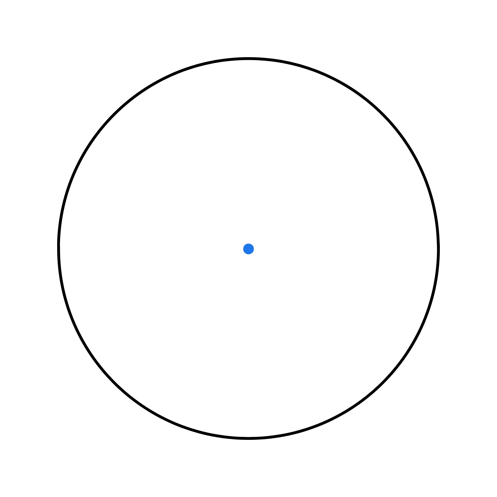
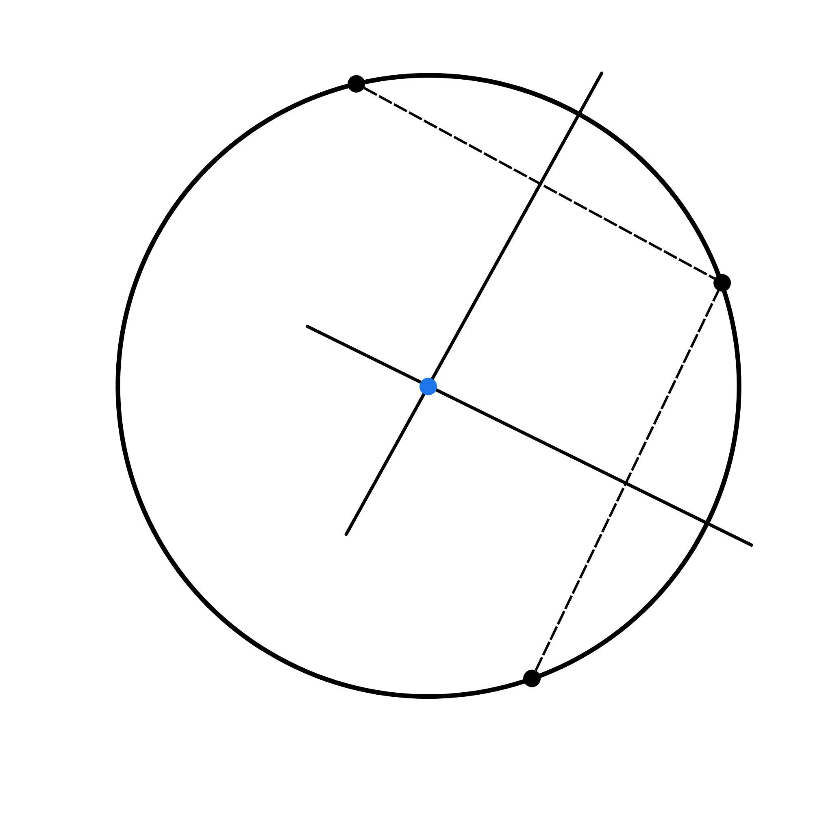

Si chiama circonferenza il luogo geometrico dei punti equidistanti da un punto fisso chiamato centro.
L’equazione di una circonferenza di conseguenza si ottiene ponendo la seguente condizione a un punto \(P(x,y)\)
\(\sqrt {(x-\alpha)^2 + (y-\beta)^2}=r\)
\(\longrightarrow (x-\alpha)^2 + (y-\beta)^2=r^2\)
Dove \(\alpha\) e \(\beta\) sono le coordinate del centro \(C\) e \(r\) è il raggio della circonferenza, ovvero la distanza tra i punti e il centro.
Quindi se il centro della circonferenza coincide con il centro \(\alpha\) e \(\beta\) sono \(0\) e l’equazione risulta:
\[x^2 + y^2=r^2\]
Notiamo che l’equazione della circonferenza è di secondo grado e da essa ricava anche l’equazione in forma implicita nella forma:
\[x^2+y^2+ax+by+c =0\]
Svolgendo i calcoli troviamo che sarà:
\(x^2+y^2-2\alpha x-2 \beta y+ \alpha^2+ \beta^2-r^2\)\(=0\)
Da cui ricaviamo i coefficienti numerici \(a\), \(b\) e \(c\):
\(a=-2\alpha\)
\(b = -2 \beta\)
\(c=\alpha^2+\beta^2-r^2\)
L’equazione di una circonferenza si distingue da quella di una conica generica perché rispetta \(3\) condizioni:
1. I coefficienti dei termini al quadrato sono uguali
2. Non compare il termine rettangolare
3. Il raggio \(\sqrt{a^2+b^2-c}\) è \(\geq 0\)
Conoscendo il raggio e il centro di una circonferenza è possibile trovare la sua equazione.
Il metodo consiste nell’applicare la formula vista prima sostituendo le coordinate del centro a \(\alpha\) e \(\beta\) mentre a \(r\) la misura del raggio.
\[(x-\alpha)^2 + (y-\beta)^2=r^2\]
Un’altra è percorribile avendo \(3\) punti appartenenti alla circonferenza da cui, come dimostrato dal teorema che dice che per \(3\) punti non allineati passa una e una sola circonferenza.
Per fare questo ci basterà sostituire le coordinate dei punti all’equazione generale e risolvere un sistema a \(3\) equazioni e \(3\) incognite.
Esempio:
\(A(0, 2)\) \(B(2, 4)\) \(C(1, 0)\)
Equazione generica della circonferenza: \(x^2+y^2+ax+by+c =0\)
Impostiamo il sistema:
\( \begin{cases} 4+2b+c =0\\ 4+16+2a+4b+c =0\\ 1+a+c =0\end{cases} \) \(\longrightarrow\) \( \begin{cases} b={-3+a \over 2}\\ 20+2a+4b+c =0\\ c =-a-1\end{cases} \)
\( \begin{cases} b={-3+a \over 2}\\ 20+2a-6+2a-a-1 =0\\ c =-a-1\end{cases} \) \(\longrightarrow\) \( \begin{cases} b={-3+a \over 2}\\ a =-{13 \over 3}\\ c =-a-1\end{cases} \)
\(a = -{13 \over 3}\), \(b = - {11 \over 3}\), \(c= {10 \over 3}\)
\(x^2+y^2- {13 \over 3}x+- {11\over 3}y+{10 \over 3} =0\) \(\longleftarrow\) \(soluzione\)
Come avrete intuito risolvere un sistema a \(3\) equazioni e \(3\) incognite è un metodo abbastanza ostico per trovare l’equazione della circonferenza dati \(3\) punti. Per questo motivo suggeriamo quest’altro metodo che può rivelarsi più veloce:
Conoscendo le proprietà dell'asse di un segmento sappiamo che ogni punto ad esso appartenente è equidistante da gli estremi. E con questo?
Sfruttando questa proprietà troviamo le \(2\) equazioni degli assi di \(2\) segmenti che uniscono \(2\) dei nostri \(3\) punti e, mettendole a sistema, troviamo il loro punto di intersezione.
Ora avendo tracciato i \(2\) assi ci accorgiamo facilmente che il loro punto di intersezione è equidistante dai \(3\) punti di partenza. Ecco trovato il nostro centro.
L’ultimo passo è calcolare il raggio che è semplicemente la distanza tra il centro e uno qualsiasi dei nostri punti.
Una retta può essere posizionata in \(3\) modi rispetto a una circonferenza:
• Tangente (2 intersezioni coincidenti, perpendicolare al raggio) \(\Delta = 0\)
• Secante (2 intersezioni) \(\Delta > 0\)
• Esterna (nessuna intersezione) \(\Delta < 0 \)
Date una retta e una circonferenza possiamo verificare la loro posizione reciproca analizzando il \(\Delta\) della risolvente (equazione a una sola incognita ottenuta in un sistema eliminando le altre incognite).
Se il \(\Delta\) è maggiore di \(0\) la retta sarà secante, se uguale a \(0\) la retta sarà tangente, mentre se il \(\Delta\) è minore di \(0\) la retta sarà esterna.
Esempio:
Verifica che la retta \(y-3x=0\) sia tangente alla circonferenza \(x^2+y^2-6x-2y=0\)
\(\begin{cases}y-3x=0\\x^2+y^2-6x-2y=0\end{cases} \) \(\longrightarrow\) \(\begin{cases}y=3x\\x^2+y^2-6x-2y=0\end{cases} \)
\(\begin{cases}y=3x\\x^2+9x^2=0\end{cases}\) \(\longrightarrow\) \(x^2+9x^2=0\) \(\longrightarrow\) \(\Delta = 0\) - Tangente
Un altro modo per verificare la posizione retta-circonferenza è quello di calcolare la distanza tra la retta e il centro della circonferenza e confrontarlo con il raggio, se è maggiore sarà esterna, se minore secante e se uguale tangente.